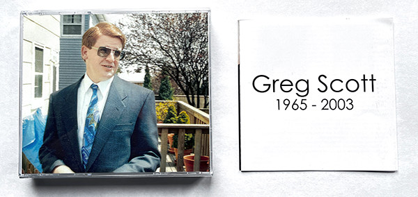
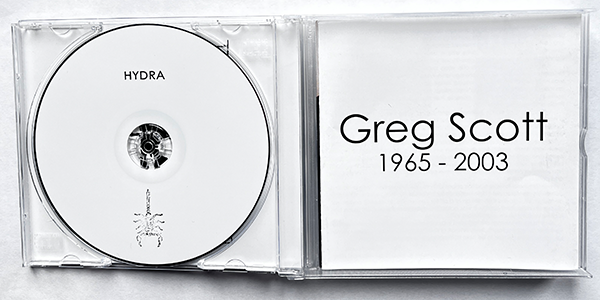
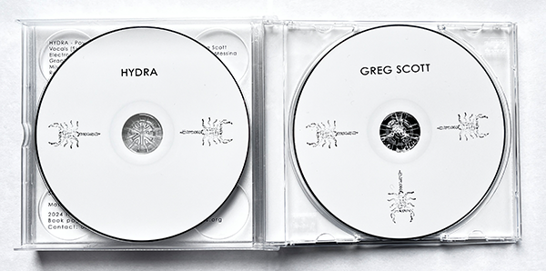

11” x 8.5” Full Colour 148 Page Softbound book
Includes a professionally printed three disc digipack.
Edition of 200 ISBN: 978-1-7780934-3-2
Published by Neural Operations 2024
Exploring the works of Greg Scott
who took his own life in 2003.
A member of Beg For Eden, Final Solution
and his last project Hydra, which this book focuses on.
Three CDs include
Power (BloodLust! 1996)
Neurology Splits (Spastik Soniks 1995, Segerhuva 2003)
Anal Test Seven Inch (XN Recordings 2002)
compilation tracks from:
Sounds of Sadism (Malsonus 1999)
and C4: Sounds Based in Explosives (Spastik Kommunikations 1998)
+
An
unreleased live recording from 1998 at the Bank in New York City
and interview of Mike Dando (Con-Dom) by Greg.
A download code for an early mix of the Neurology tape
and more.
Writings and recollections shared by friends and collaborators:
Peter Messina, Chris Goudreau, Edward J. Southgate,
Eric Suchodolski, Jane Elizabeth, John Figueroa,
Sal Scarpulla, Guy Gustafson, Shade Rupe and Michael Nine.
Archive interviews by
Anthony Saunders (Assume Power Focus),
Benoit Chambon (Noiseist)
and Xavier Laradji (Timeless).
Pages of correspondence, show flyers and photos.
A one of a kind definitive collection,
showcasing an amazing talented artist
and friend who left us far too soon.
A triple jewel case three CD version
with a 10 panel booklet is also available.


